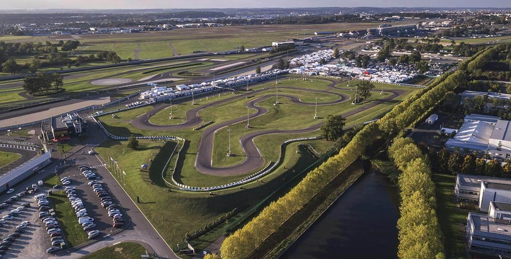
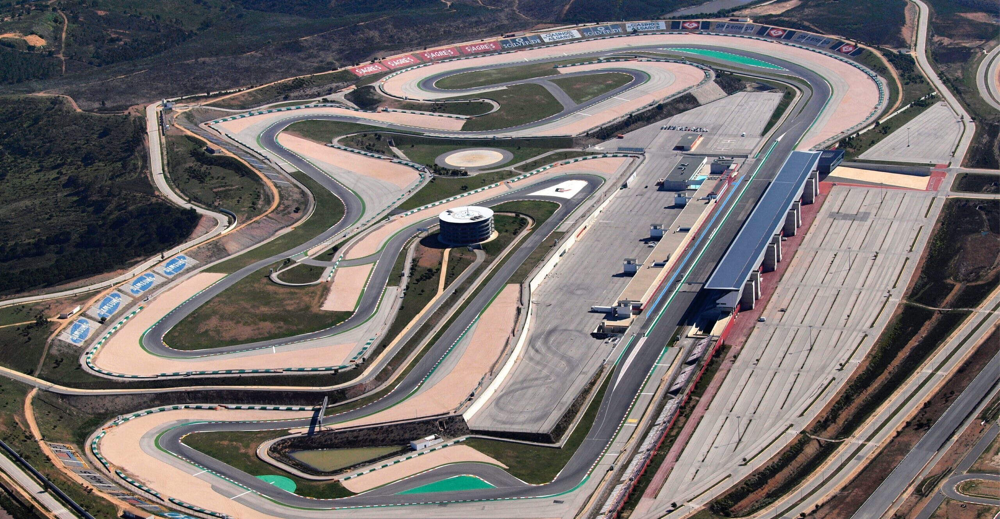
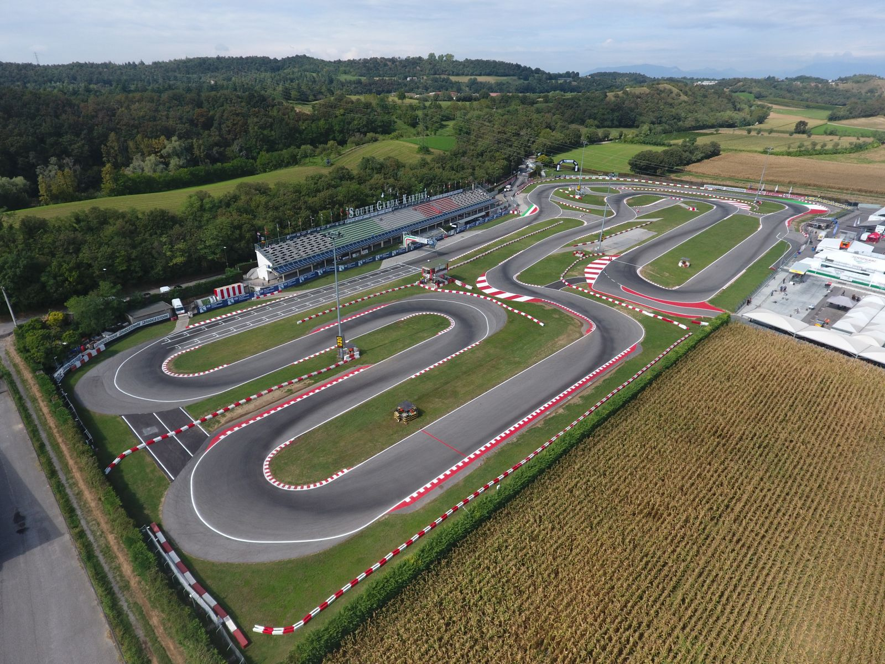
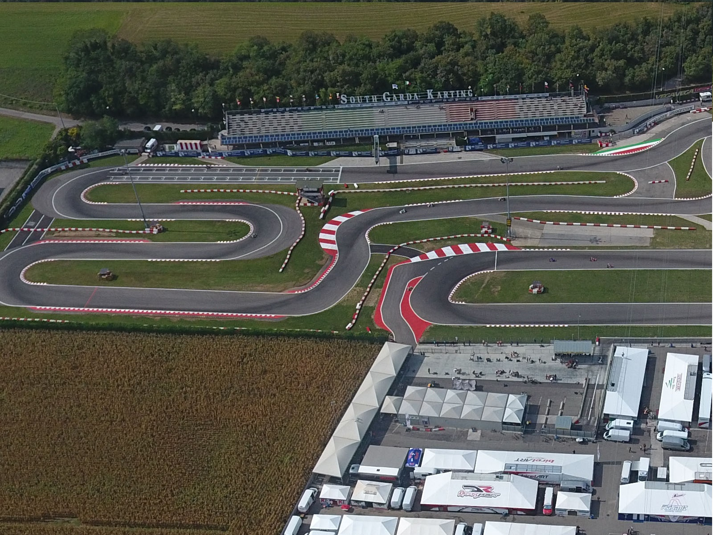
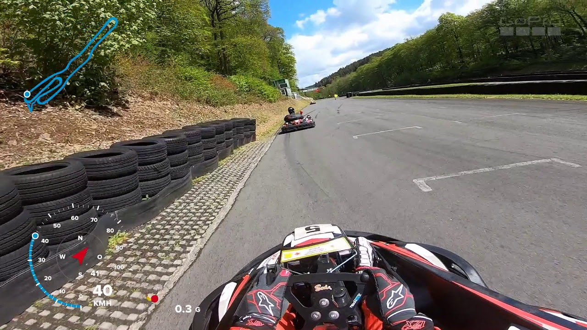
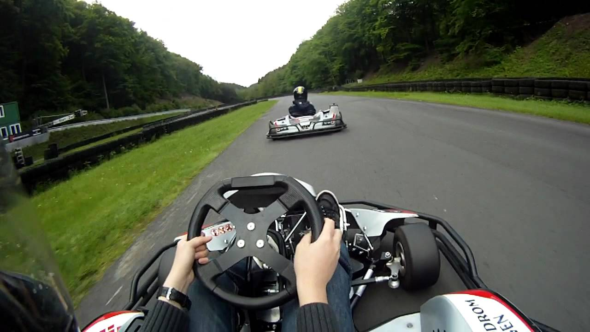
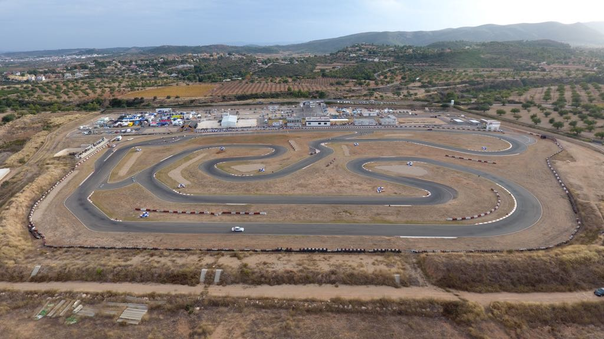

Най-големите картинг писти

Кадир Язаджи
Картингът привлича ентусиасти от целия свят, а изборът на подходяща писта е от съществено значение за удовлетворението от състезателния опит. Ето някои от най-големите и известни картинг писти по света, които без съмнение биха внесли вълнение в света на картинга:
30
НОЕМВРИ

.png)


1. Circuit de la Sarthe (Le Mans Karting International) - Франция: За тези, които обичат предизвикателствата на дългите прави участъци и техническите секции, тази френска писта е идеалното място.
2. Kartodromo Internacional do Algarve - Португалия: Писта, която съчетава красивите пейзажи на Алгарве със състезателната интензивност, предлагайки уникално преживяване на картинг.
3. South Garda Karting - Италия: Италианската писта в Лонато е известна с множество международни картинг състезания и предоставя изключително състезателно преживяване.
 4. Kartbahn Hagen - Германия: Германия предлага Kartbahn Hagen, където различните конфигурации на пистата предоставят разнообразие и предизвикателство за всяко ниво на умения.
 5. Kartódromo Internacional Lucas Guerrero - Испания: Тази испанска писта във Валенсия е място за интензивни картинг състезания и привлича страстни състезатели от цяла Европа.
